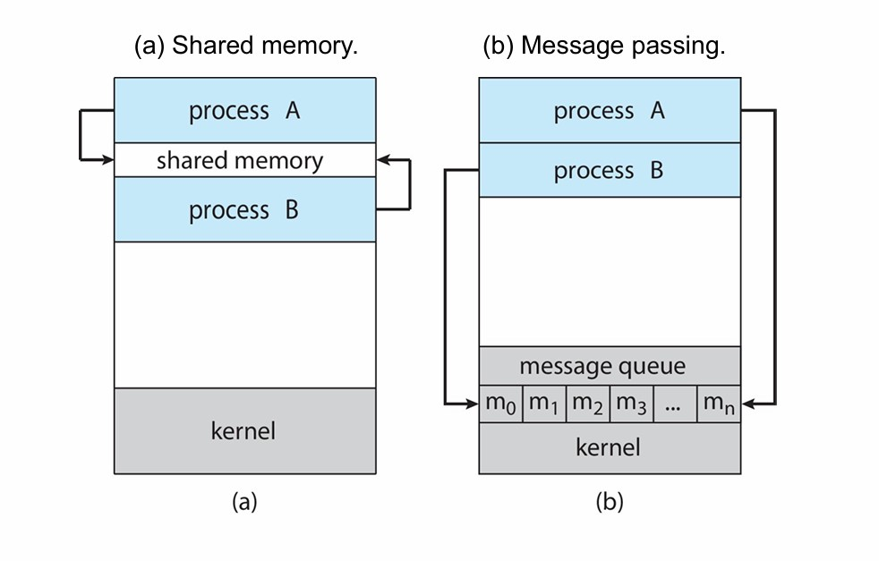
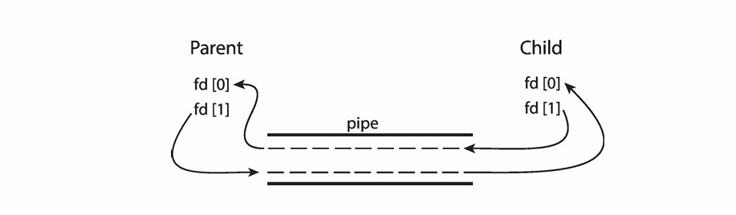

Chapter8 Inter-Process Communication（IPC）
8.1 基本概念
进程之间需要协作的原因：
- information sharing 信息共享：例如共享文件等
- computation speedup 计算加速：例如多个进程同时处理一个任务
- modularity 模块化
- convenience 便捷性
IPC即为这样一个机制，用于进程之间的交互，也可用于任务切分。
Example
许多网页浏览器作为单一进程运行，但谷歌浏览器为multiprocess，其包含三种进程：
- browser process： 管理用户界面、硬盘和网络I/O等
- renderer process： 渲染网页、处理HTML和JavaScript等，每打开一个新网页就创建一个新的renderer process，其运行在sandbox环境中，限制磁盘和网络I/O操作，以最小化安全漏洞的影响
- plug-in process： 为每个插件单独创建
网页之间以进程为单位隔离，保证网页之间互不干扰，否则，一个网页有病毒的话，另一个网页也会被侵犯隐私信息。同时，一个网页包含多个进程，一个进程可以进行大约几百个系统调用。
8.2 Models of IPC IPC模型
IPC模型中最经典的两个为shared memory和message passing，大部分OS同时使用这两个模型。
对于shared memory：
- low-overhead：只有一开始会有一些syscall，之后kernel不介入
- 对于用户更加方便，可以像访问普通的RAM一样读写数据
- OS很难实现，因为要考虑进程之间的同步
对于message passing：
- high-overhead：kernel介入维护，每次交互都要使用syscall
- 对于交互小的数据更加方便
- OS比较容易实现

Shared Memory
进程之间建立shared memory region。其中一个进程建立shared memory segment，另一个进程attach到这个segment上。（但实际上，这与内存保护的想法背道而驰）
进程之间通过在shared memory中读写数据来交互，交互期间OS完全不参与。
Example
producer/consumer：
规范：POSIX Shared Memory
首先，一个进程创建shared memory segment（使用shmget函数）：
id = shmget(IPC_PRIVATE, size, IPC_R | IPC_W);
然后，想要交互的进程需要attach到这个segment上（使用shmat函数）：
shared_memory = (char *) shmat(id, NULL, 0);
现在，该进程可以对shared memory进行读写操作（使用sprintf函数）：
sprintf(shared_memory, “hello”);
如果该进程想从shared memory中detach（使用shmdt函数）：
shmdt(shared_memory);
如果想完全移除shared memory segment（使用shmctl函数）：
shmctl(id, IPC_RMID, NULL);
对于进程是如何知道shared memory segment的ID的问题，一般可以通过fork传递，这样parent和child都能得到。
当然，shared memory segment的ID也可以通过命令行参数、储存在文件中或者使用message passing传递。
我们不难发现，shared memory略显笨重，因此如今shm-type的code很少被使用，其正在逐渐被线程所取代。
Message Passing
与shared memory不同，message passing依然保持了memory isolation。
messsage passing还是分布式计算的关键，因为在不同主机上的进程无法共享物理内存。当然，其对于同一主机上的进程交互也很有用。
message passing涉及两个基本操作：
- send： 发送消息
- recv： 接收消息
如果两个进程想要直接交互，则其会搭建起一个link（抽象概念，可用多种方法实现，甚至是shared memory），通过调用send和recv来交互，还可以选择性地开启或关闭link。
direct communication：
进程调用send和recv时必须明确指明目标进程。
send(P,message)：发送message给进程$P$recv(Q,message)：接收来自进程$Q$的message
link自动建立，通常为双向，一个link与一对交互进程一一对应，因此$n$个进程之间有$C_n^2$个link。
indirect communication：
进程通过mailbox来交互，每个mailbox有唯一的ID，只有两个进程共享一个mailbox时才能交互。
在indirect communication中，link指的是共享的mailbox，一个link可以和很多进程联系，每一对进程也可以有多个link，这些link可以单向也可以双向。
相关操作：
- 创建mailbox
- 通过mailbox收发消息
- 销毁mailbox
进程调用send和recv时必须明确指明mailbox。
send(A,message)：发送message给mailbox$A$recv(A,message)：接收来自mailbox$A$的message
问题：当进程$P_1$，$P_2$，$P_3$共享mailbox$A$时，$P_1$发送消息，$P_2$和$P_3$同时接收消息，这个时候哪个进程会接收到消息？
解决思路：
- 让最多两个进程共享mailbox
- 同一时刻只允许一个进程接收消息
- 发送方获得所有接收方的信息，然后由系统选择接收方
Synchronization 同步性：
message passing就时序问题上可以分为blocking和non-blocking。
对于blocking：
其对应的是synchronous 同步的。
- blocking send：sender发送消息后会阻塞，直到receiver接收到消息后才能继续执行其他操作
- blocking receive：receiver在得知有消息即将到来时会阻塞，直到接收到消息后才能继续执行其他操作
对于non-blocking：
其对应的是asynchronous 异步的。
- non-blocking send：sender发送消息后，无论receiver是否接收到都不会阻塞，而是一发送完就继续执行其他操作
- non-blocking receive：receiver在得知有消息即将到来时不会阻塞，而是在接收到消息之前可以继续执行其他操作。如果receiver在检查消息队列时没有找到有效消息，则返回一个Null message。
Buffering 缓冲：
buffering通常以消息队列的形式附加在link上，可以分为：
- zero capacity： link上消息无法缓存，因此sender必须要等receiver接收到消息后才能发送下一条
- bounded capacity： link上消息数量有限，如果满了则sender同样需要等待
- unbounded capacity： link上消息数量无限，sender永远无需等待
Signal
signal是UNIX中的一种IPC，其用于通知进程事件的发生，类似于高级的软件中断，Windows用APC（Asynchronous Procedure Calls）来模拟。
signal可用作IPC，也可用于进程同步，但实际情况中其他方法更常用（signal和线程一起使用比较复杂）。
进程必须对signal进行处理，可以忽略，也可以使用默认的或自定义的handler。详情请见Chapter9。
Pipe
主要分为ordinary pipe和named pipe，最主要的区别是是否只允许父子进程交互。
ordinary pipe（anonymous pipe） 匿名管道：
仅用于parent和child之间的交互，其他进程无法使用。
单向，producer在write-end写入，consumer在read-end读取。

如上图所示，fd[0]是read-end，fd[1]是write-end。
named pipe 命名管道：
没有父子进程的限制，允许任何两个（甚至多个）不相关的进程交互，双向，比匿名管道更加通用。
命名管道以文件形式存在于文件系统中。
UNIX Pipe：
在UNIX中管道十分常见，为单向，因此两个进程交互必须要使用两个管道。
Example
例如：ls | grep foo命令创建两个用管道连接交互的进程，ls的输出为当前目录下所有文件名，从write-end写入管道；grep foo从管道的read-end读取文件名，找到包含foo的文件名并输出。
实际上可以创建任意条管道：
ls -R | grep foo | grep -v bar | wc -l
8.3 Client-Server Communication 客户端-服务器交互
应用程序通常结构化为一组通信进程，其在不同机器之间和机器内部都很常见。
种类包括：
- Socket
- RPC
- Java RMI